RF Signal Characterisation
Before designing input representations, the raw DroneRF waveforms were characterised in notebooks/02_DroneRF_Signal_Characterization.ipynb. The analysis covers the time domain, the frequency domain, time–frequency structure, stationarity, autocorrelation and amplitude distributions, first on exploratory recordings and then on representative recordings selected for each class. The findings motivated the dual time/frequency design of VARDHAN-v3 and the use of per-segment normalisation.
On this page
1. Time-Domain Analysis
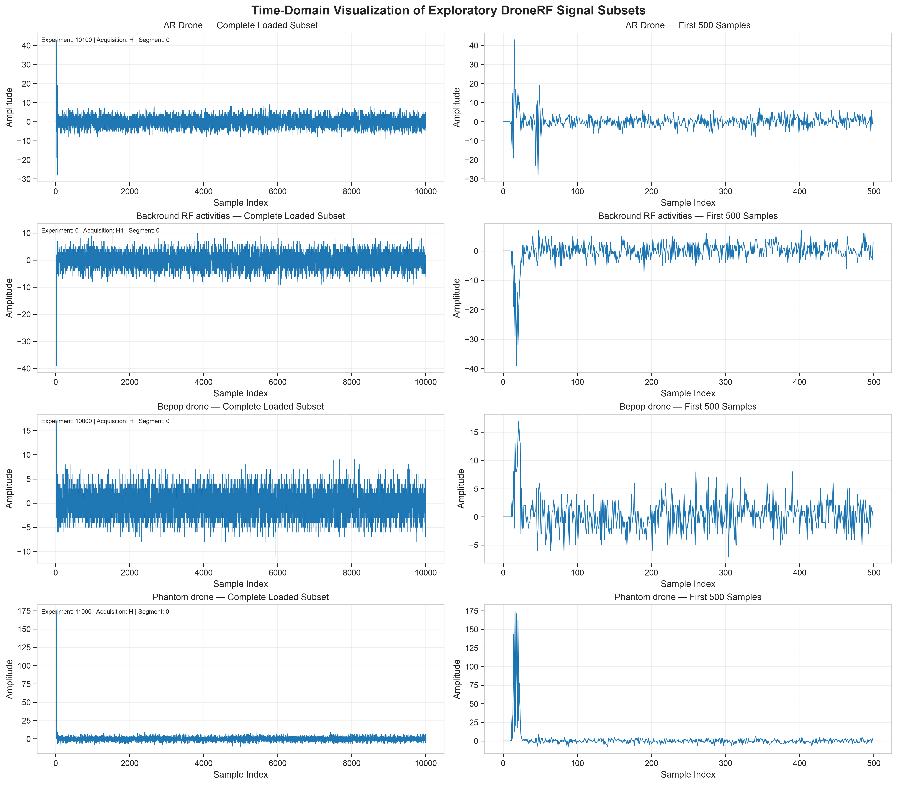
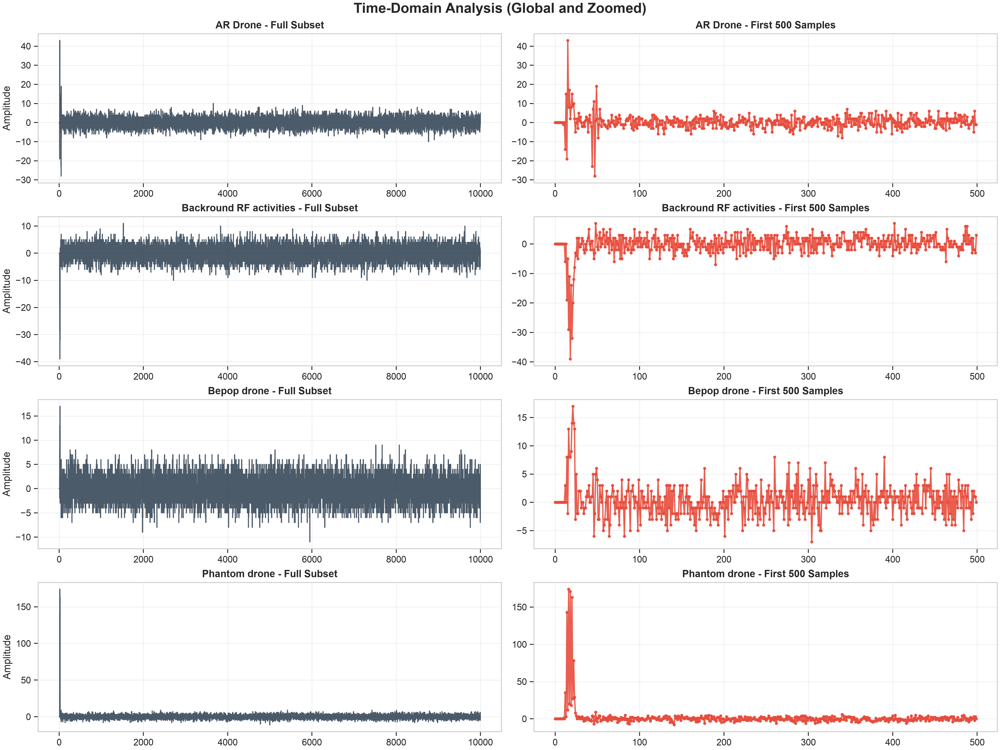
2. Frequency-Domain Analysis
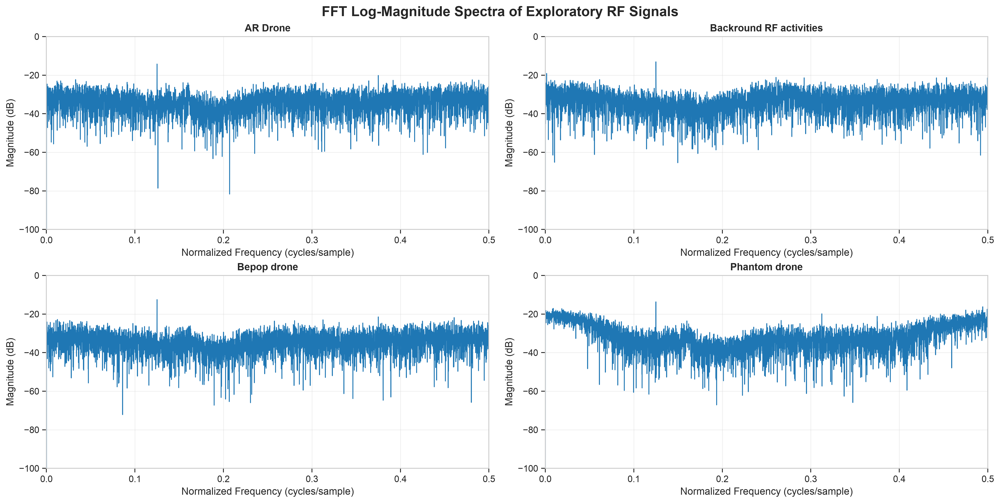
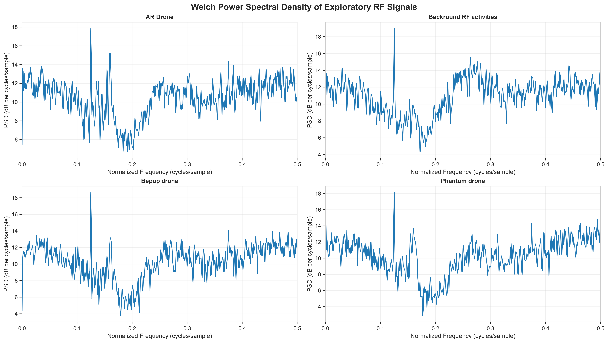
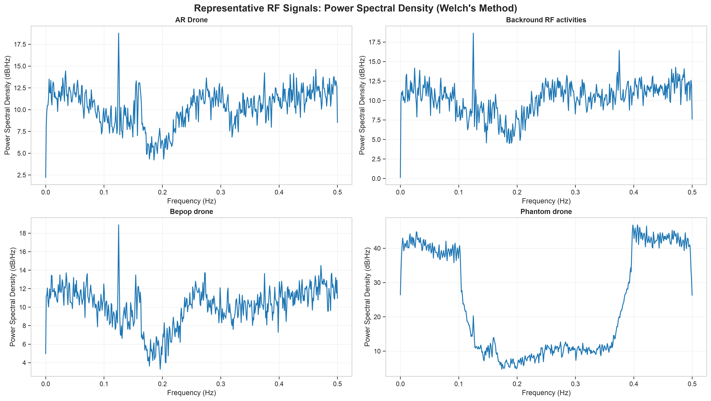
3. Time–Frequency Analysis
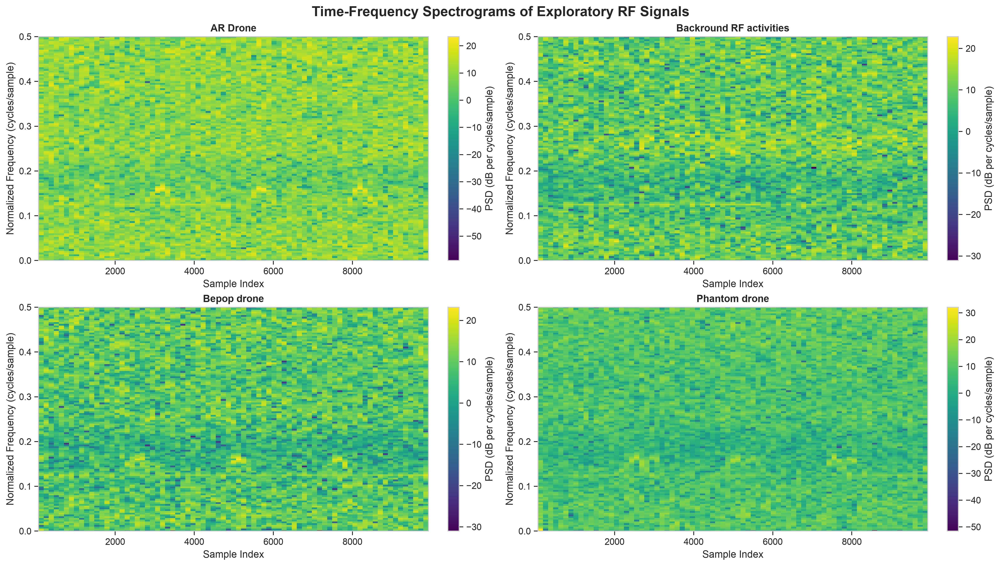
4. Stationarity
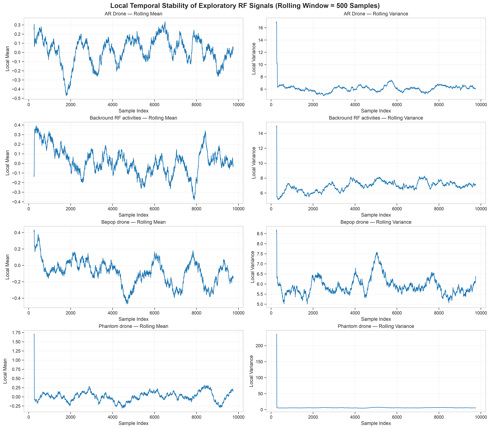
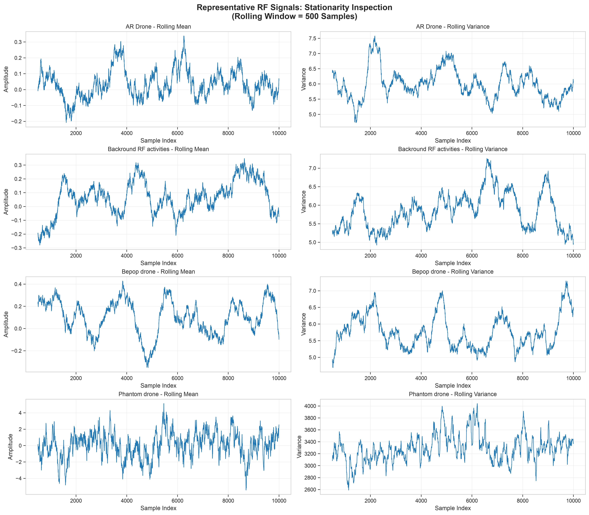
5. Autocorrelation
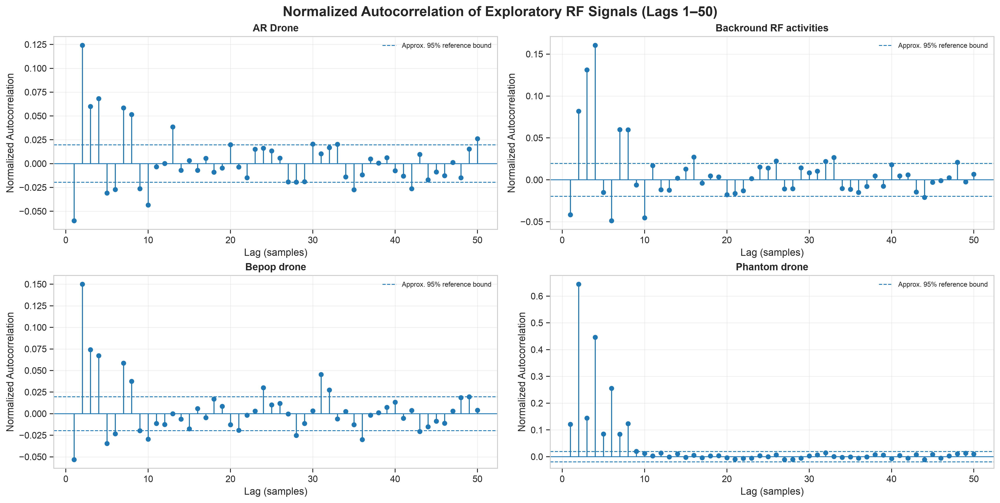
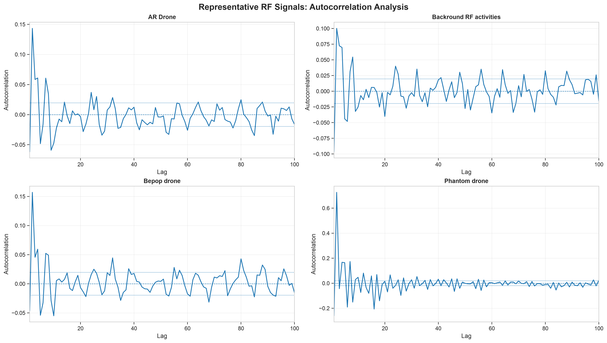
6. Amplitude Distributions
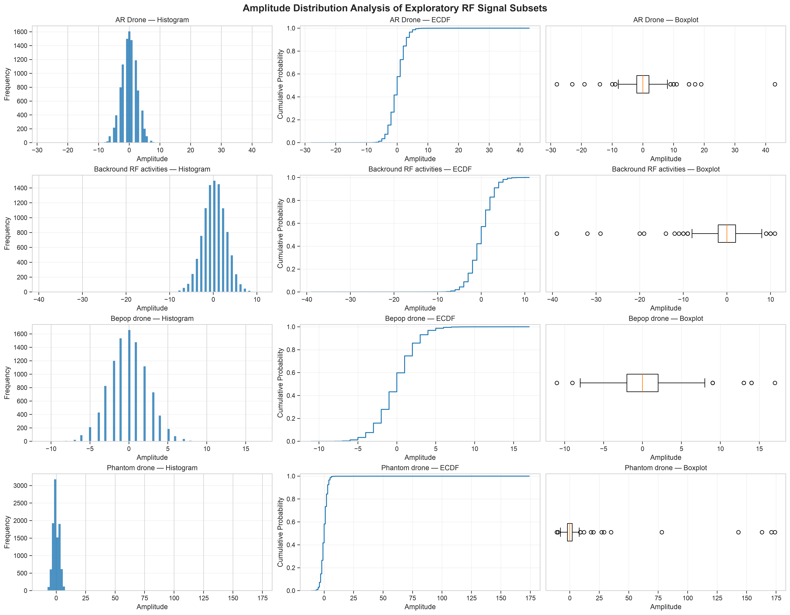
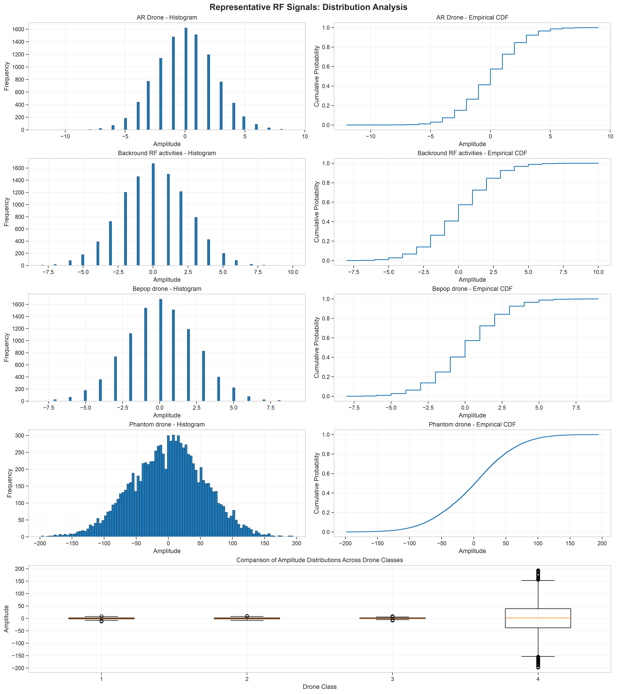
7. Cross-Class Comparison
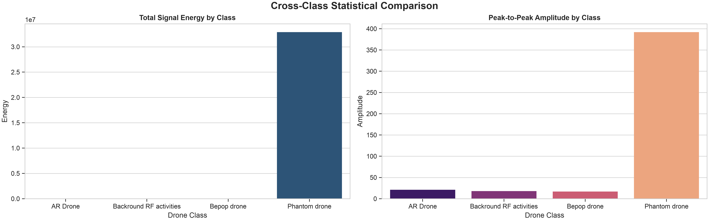
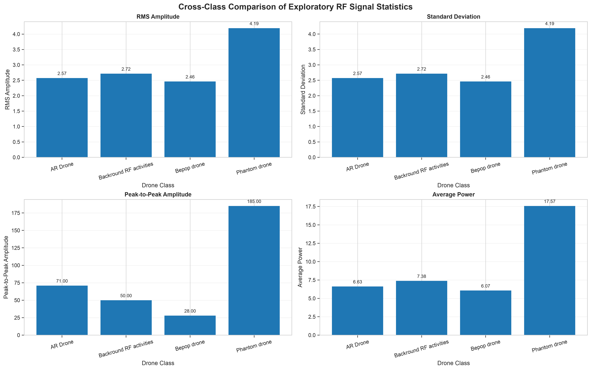
| Class | RMS amplitude | Standard deviation | Peak-to-peak | Average power |
|---|---|---|---|---|
| AR Drone | 2.57 | 2.57 | 71 | 6.63 |
| Background RF | 2.72 | 2.72 | 50 | 7.38 |
| Bebop drone | 2.46 | 2.46 | 28 | 6.07 |
| Phantom drone | 4.19 | 4.19 | 185 | 17.57 |
8. Implications for Model Design
- Amplitude is not a reliable class cue. The Phantom recording has roughly 2.4× the average power of the other classes. A classifier that relies on absolute amplitude would learn receiver gain and distance rather than drone identity, so every model input is detrended and normalised per segment.
- Shared ambient spectrum. Strong components common to all classes (Figure 4) mean that discriminative information lies in finer spectral and temporal structure, motivating a dedicated spectral branch with both power and phase (real/imaginary) channels.
- Non-stationarity and bursts. Burst-like, time-varying behaviour motivates multi-scale temporal convolutions with a large receptive field and learnable attention pooling instead of global average pooling.